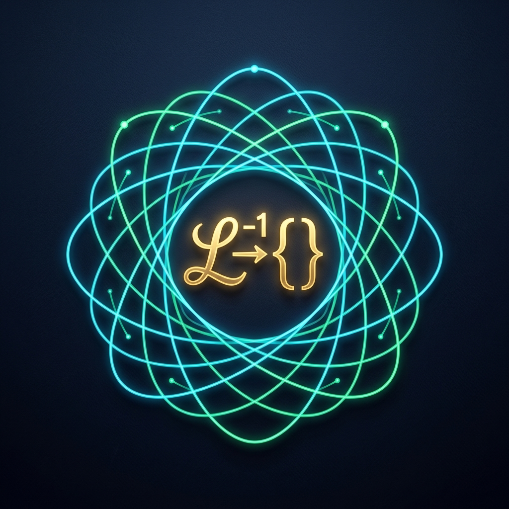

Versión 1.0.0 (Release 2026) — Inversión numérica de transformadas de Laplace de alto orden (desde $K = 1$ hasta $K = 1,000,000$) estrictamente sin cálculo de raíces.
FactorPoly y PartialFractions procesadas en milisegundos.LaplaceGUI): Panel interactivo de control y diagnóstico con doble gráfica y exportación de datos.% 1. Invertir una fracción racional estándar: F(s) = 1 / (s^2 + 2*s + 2)
z = linspace(0, 10, 500);
[f_vals, info] = laplace.invert([1], [1, 2, 2], z);
% 2. Graficar la respuesta
plot(z, f_vals, 'b-', 'LineWidth', 1.5);
xlabel('Tiempo z (s)'); ylabel('f(z)');
grid on;Ejecute en la línea de comandos de MATLAB o GNU Octave:
>> LaplaceGUI